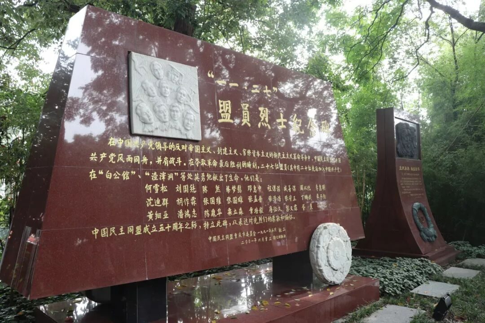
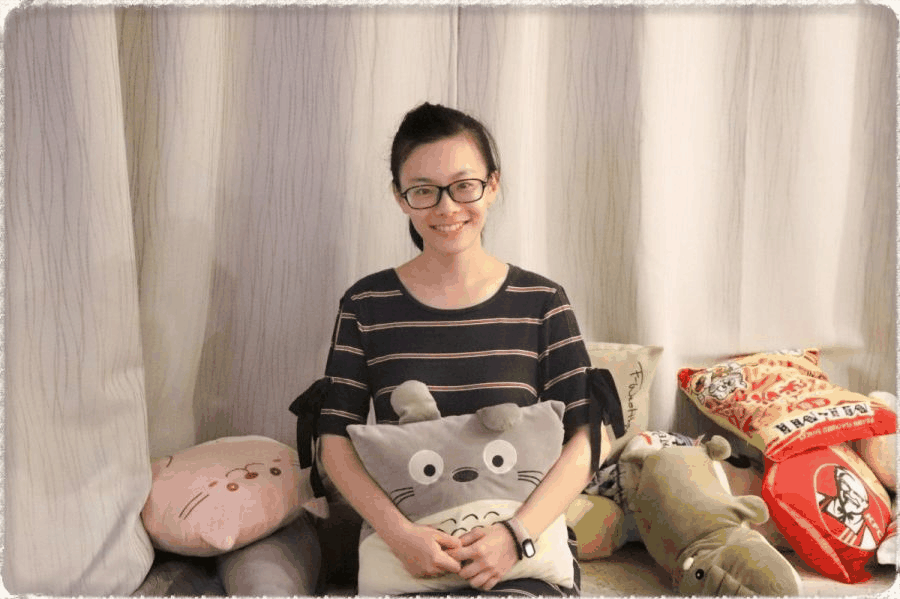
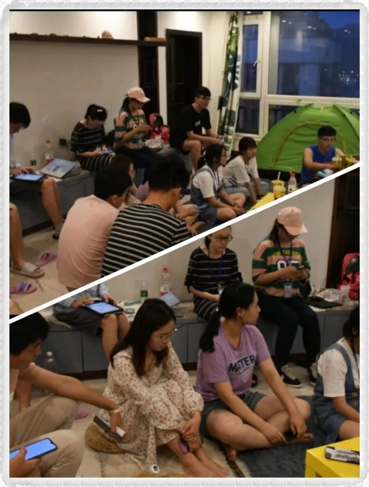
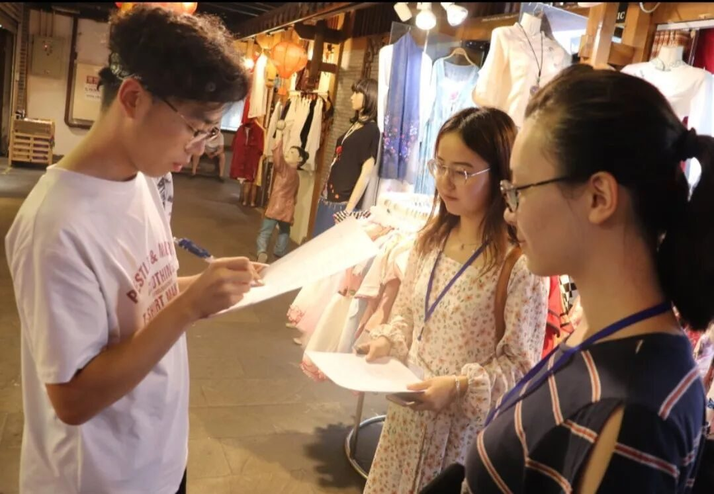
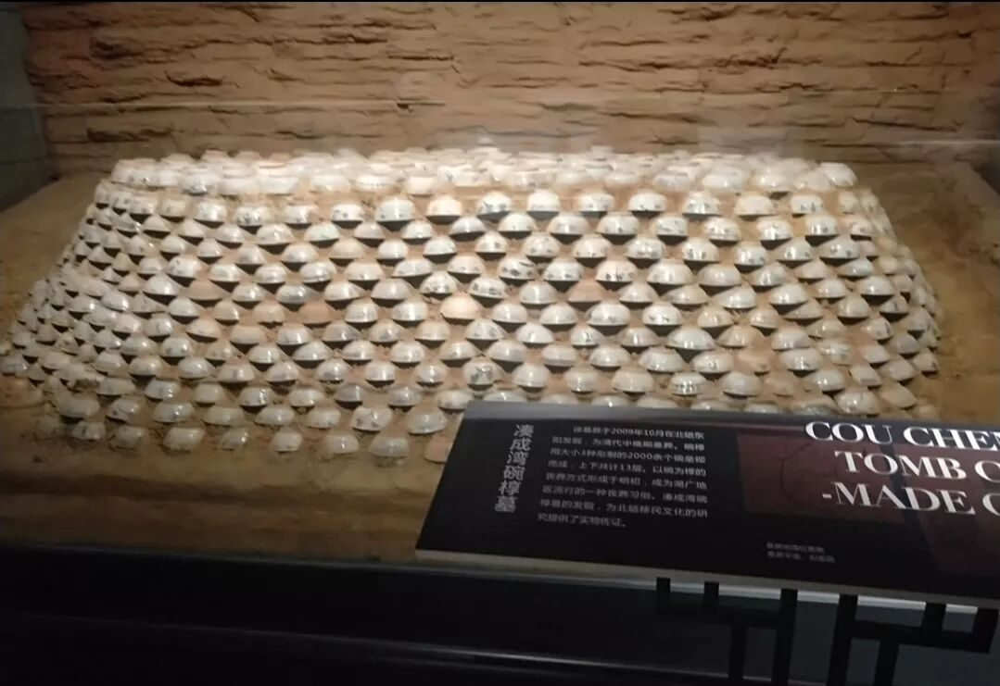

【渝传尺素•十五】这一世，我转山转水转佛塔，只为途中与你相遇


行者
罗琳涵
这一世
我转山转水转佛塔
只为途中与你相遇


“罗琳涵同学，恭喜你成为2019行者无疆团队中的一员！期待与你完成一场文化苦旅！”
两个月前收到的录取邮件历历在目，犹记得当时饱含惊喜又交织着几分面对未知的迷茫。我得承认，在这个团队中，我算不得什么“文化担当”，对即将探索的种种文化也只是皮毛，再加上慢热的性格，实践前期，我基本是怀着惴惴不安的心情和大家走过一程又一程。
印象最深的，是每晚例会上的感想分享。听完了一个又一个优秀行者们的精彩感想，我总是觉得自己的文字难登大雅之堂。幸好有同行小伙伴温暖的鼓励，再加上我渐渐学会了在学习中记录，学习后及时整理补充，使得自己对文化的感悟更上一层楼，也不再担心自己没有收获、无感可发了。记得第三天晚，我慢慢在大家面前梳理总结完了个人感想，坐在前面的行者小伙伴笑着回头看了我一眼，说：“特别棒！”我的内心是无比地温暖与感动。


二 ·工作 · 积跬步，无问西东
身为外联组的一员，我的任务包括事先与调研地点进行电话洽接。一开始也是紧张，一开始也是在对着电话那头结结巴巴地念电脑上事先敲好的文字，做到后来，也能不再犹豫地按下绿色的通话键，谈笑自如得体；此外，为了更好地进行调研工作，团队中都被分配了问卷调查的工作，记忆最深的还是解放碑街口发出的第一份问卷，也是在那份问卷中，让我感受到了山城人民的热情与豪爽，慢慢不再拘束、局促。
组内工作中，有组长将任务的细致整理与划分；团队任务上，有行者们一起分担，一起在受挫时互相笑着打趣。是温暖的行者家庭，给了我们无问西东的勇气。

三 · 调研 · 日月卿，吾之三爱

日为朝
那是行者们的第四天，晨起，浩浩荡荡前往了北碚文陈馆，初入馆中，便有一排排的瓷器陶器映入眼帘。陶器，使我们摸索到了早在4500年前北碚一带便有先祖们的生活痕迹；瓷器，其发展可以使我们清晰地感受到先人审美的过渡及转变，进而推断出经济及生活条件上的发展进步，此为朝；从一座碗墓的搭建再到其间粘合材料的制作配比，可以看到一方先祖的智慧结晶，以及对后世生生不息的希望，此为朝；卢作孚先生为了北碚一带的发展，农业上建农场，经济上设银行，教育上搭学校，有规划，更通过行动来践行，此亦为朝。朝，是太阳，是希望，它给了一座城成长的动力和方向。

月为朝
7月25日的早晨，行者们出现在歌乐山烈士陵园中，静静地拜谒为国捐躯的先辈们。陵园的山脚下，矗立着一所歌乐山烈士的介绍馆，里面有对各位烈士的介绍，还有其个人物品的陈列。其中，最令人动容的是烈士们与亲人的家书和最后的遗书，从这些文字中，我们看到了这些有着铮铮烈骨的英雄们其实也是普通人，他们和我们一样爱家人，有着儿女情长。但是他们为了国家而舍小家，并殷切嘱咐子女也要不忘初心，为祖国奋斗、做贡献。
有句话叫做，你所说的岁月静好，不过是有人为你负重前行。他们在铁窗黑牢里，面对生死，战胜了折磨，经受住了诱惑。歌乐山上暮色四合，万籁都寂，承载着一代人威武不能屈的精神，只为日后的朝阳美好。
卿为朝朝暮暮
一针一线，让行者们在蜀绣中行走。黄老于朝暮间把自己活成了蜀绣，包容，淡然，不以物喜不以己悲。在蜀绣兴盛的曾经，黄老摒住浮躁，将有分量的耐心与精力倾注于细细的针脚；如今，蜀绣于各大文化中漂泊，黄老巧将现代元素融入蜀绣，赋予蜀绣第二次生命。
是山城人民让我看到了朝暮间各大文化的更迭与融合。卿为朝朝暮暮，是我感受到重庆文化的生生不息。

有人说，一生至少该有一次，为了某个人而忘了自己，不求有结果，不求同行，甚至不求你爱我，只求在我最美的年华里遇到你。这句话本是用在爱人身上，我把它送给行者无疆。感谢这7天的陪伴，感谢在大学时光中与你相遇！


致广大，致你们
顾盼莲
生荷俏
藕出裙袂
晕比红珠俏
指提杜鹃念三分
颦颦一笑
徐徐霓虹绕
久别时
阑珊立
念字纵长
长过江两岸
今时目眩真真语
言尽情长忆
犹愁赏旧绿
来源丨行者无疆实践团
文字丨罗琳涵
排版丨邓子孚
审核丨邓子孚 段智然
视频丨陈辉
行者无疆实践团
QQ：2758025831

随行者一起认识世界
长按二维码